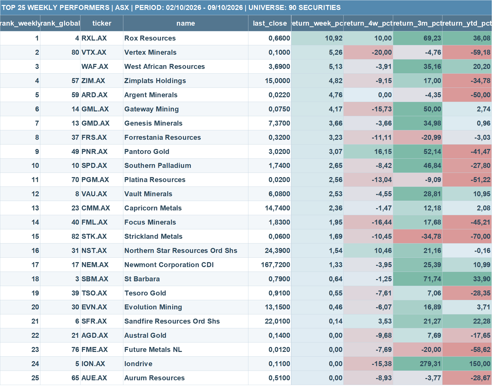
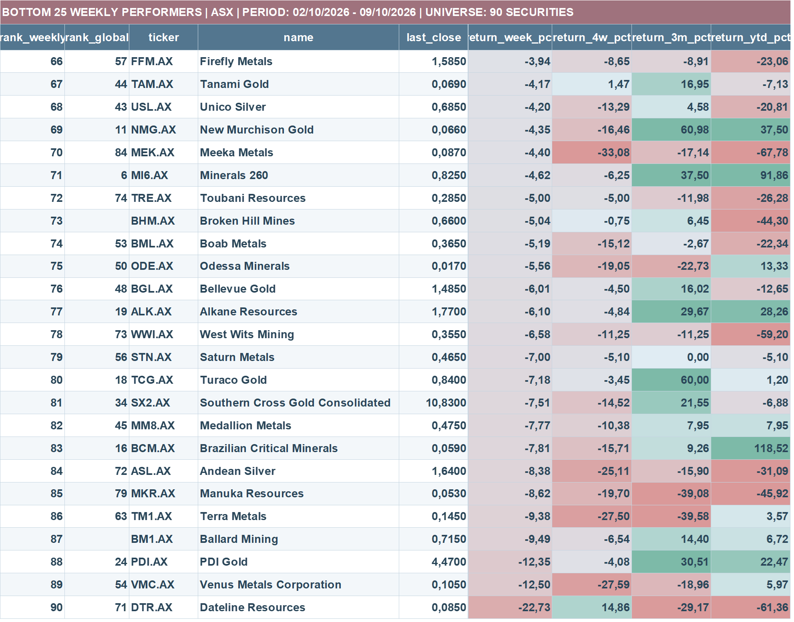
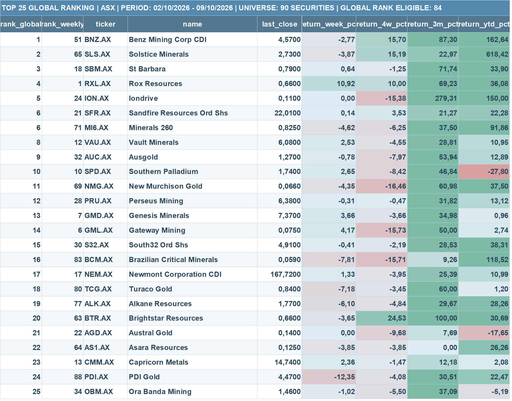
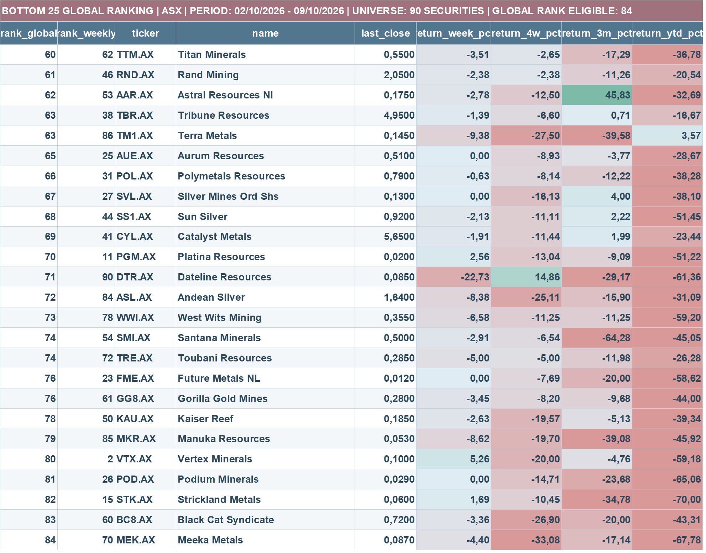

Bottom line: The pace of selling moderated compared with the previous week, but weakness broadened further. A slowing decline is not, by itself, confirmation that a durable bottom has formed.
1. The decline is slowing, not reversing
The median stock fell 2.28% during the October 2–9 measurement period, compared with a decline of approximately 4.53% in the preceding weekly snapshot. The proportion of advancing stocks increased from about 18.0% to 23.3%. Still, 70% of the analyzed companies finished the current period lower.
This is a meaningful moderation in the speed of the decline, but the cross-section remains weak. A smaller weekly loss is not equivalent to a positive change in trend.
2. Market breadth is deteriorating
Only 31 of 90 companies, or 34.4%, remain above their 200-day moving averages. Four weeks earlier the breadth figure was 48.3% (43 of 89 eligible companies). The deterioration is therefore not limited to the most speculative names.
The proportion trading more than 20% below their own 52-week closing highs rose from 68.2% to 74.2%. Meanwhile, 55.1% stand more than 30% below those highs, and the median 52-week drawdown deepened to −33.6% from −31.6%. These headline percentages use each week's valid sample; paired-sample weekly changes are available in the source workbook.
Looking across the available price history, 54 of 90 companies (60%) are more than 50% below their highest recorded closing price. These are highs within the supplied data, not necessarily lifetime highs.
3. Volume offers little evidence of strong accumulation
Median relative volume fell to 0.73× from 0.84×. This measure compares the most recent five sessions with the preceding 60-session average. Only one of 90 securities reached or exceeded 1.5× relative volume, and that security declined over its five-session price window.
The median 20-session signed volume balance improved from −8.92% to −6.35%, but remained negative. Around 40% of companies had a positive signed balance. Volume balance describes the distribution of turnover between rising and falling sessions; it does not directly identify buyers or sellers.
4. Leadership remains selective
Rox Resources (RXL.AX) rose 10.92%, leading the weekly ranking and holding fourth place in the eligible global ranking. West African Resources gained 5.13%, Genesis Minerals gained 3.66%, and Pantoro Gold advanced 3.07%, with a four-week return of 16.15%.
At the other extreme, Dateline Resources fell 22.73%, followed by Venus Metals (−12.50%), PDI Gold (−12.35%), and Ballard Mining (−9.49%). Divergence between leaders and laggards is becoming a defining feature of the market.
Only 12 of 90 stocks (13.3%) outperformed the S&P 500 benchmark over four weeks, using the benchmark series supplied to the scanner. This is a relative-performance comparison, not a direct measure of the Australian market index.
5. What would signal a more credible recovery?
The first constructive developments would be broader participation above moving averages, a sustained reduction in drawdowns, and advancing stocks supported by stronger trading volumes. For now, the market is showing signs of reduced selling intensity without convincing evidence of a broad-based recovery.
Some future leaders may already be separating from the field. Identifying those companies requires studying both weekly momentum and the longer-term ranking rather than treating every deeply corrected stock as equally attractive.
All 90 ASX Companies — Full Weekly Ranking
Loading all 90 companies…
Original publication images








Methodology and limitations
Weekly returns, four-week returns, three-month returns and year-to-date figures come from the supplied scanner workbook for the period October 2–9, 2026. Weekly ranks cover all 90 analyzed names; the global ranking applies only to the 84 securities meeting the full-history eligibility requirements for eight return windows (one week, four weeks, three, six, nine, twelve, fifteen and eighteen months). The global score is the simple mean of the eight component ranks for eligible companies, followed by a ranking of those mean scores; lower ranks are preferred. Equal ranking numbers can occur because of ties.
Drawdowns are based on closing prices. The 52-week measure requires sufficient observation history. Relative-volume comparisons use valid volume histories; differences in coverage can change the cross-sectional sample. Data may be affected by corporate actions, missing observations and vendor adjustments. Rankings are descriptive, not buy or sell recommendations.
Data availability: Download the original complete Excel workbook above. The four original ranking images can also be downloaded individually. The interactive 90-company table remains available directly on this page.
Study page views: 
Structural Alpha · Independent quantitative research · For information only; not investment advice. Return to research archive